Oficina
Exhibited at Dilalica Barcelona February-April 2021
Artists: Daria Irincheeva, María Alcaide, Coreographies of Work
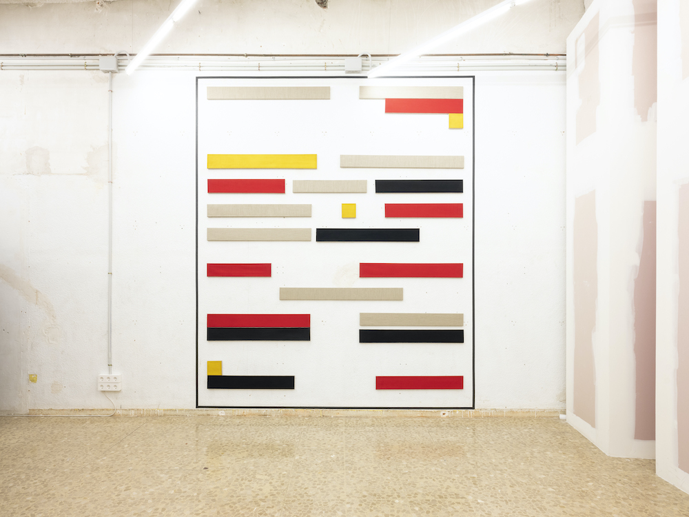
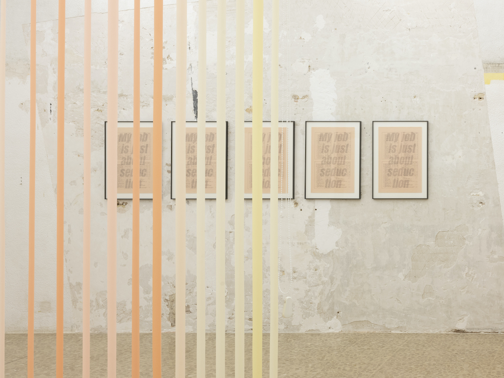
Los Dalton
Exhibited at Dilalica Barcelona September 2020
Artists: Los Dalton (Miguel Ángel Tornero, María Sánzhez, Miguel Fructuoso)

Cuerpo y Ficción
Exhibited at Dilalica Barcelona. February-September 2020.
Co-curated with Marta Sesé.
Artists: Cabello/Carceller, Lucía C. Pino, Ariadna Guiteras
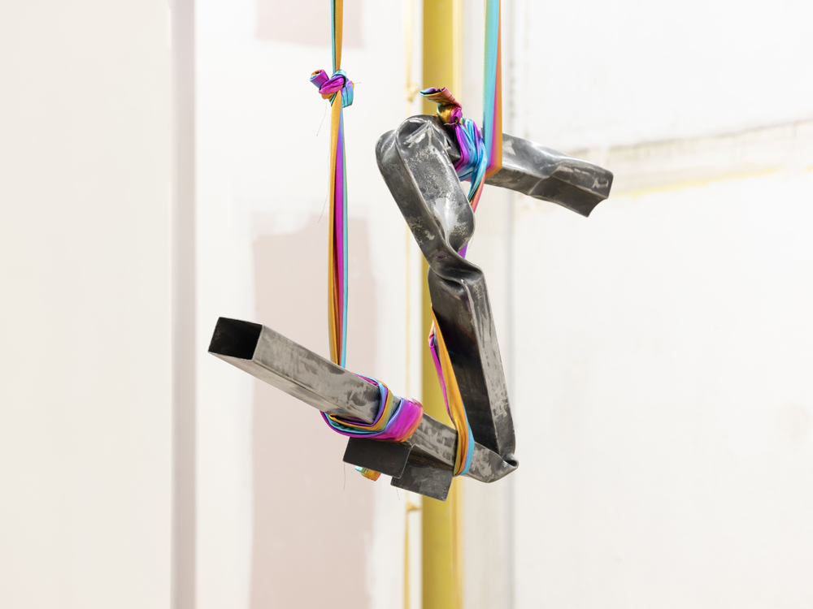
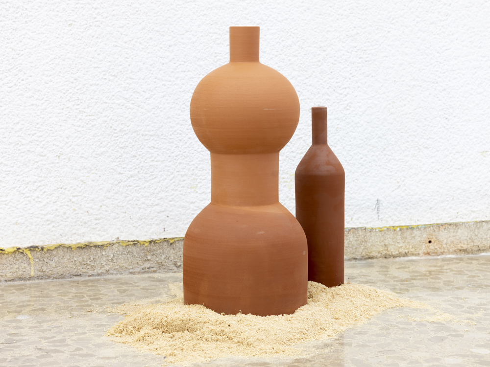
Postcrisis
Exhibited at Conde Duque (Madrid, 2020) and at Nadie Nunca Nada No, Alimentación 30, El cuarto de invitados, Nigredo, Hiato, d11 and Casabanchel.
Co-curated with Marta Sesé and Louis-Charles Tiar.
Artists: Tamara Arroyo, Marlon de Azambuja, Iñaki Domingo, Mario Espliego, Esther Mañas y Arash Moori, Clara Montoya, Rafa Munárriz y Agnès Pe. Images by Galerna.
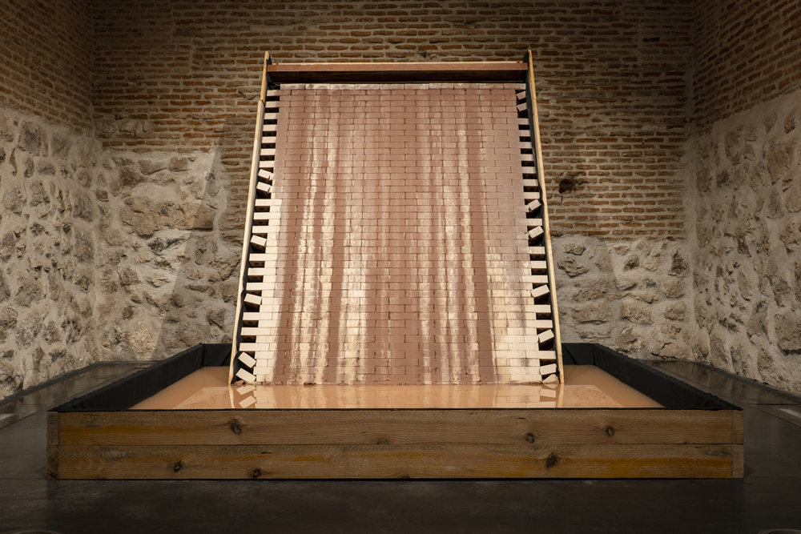
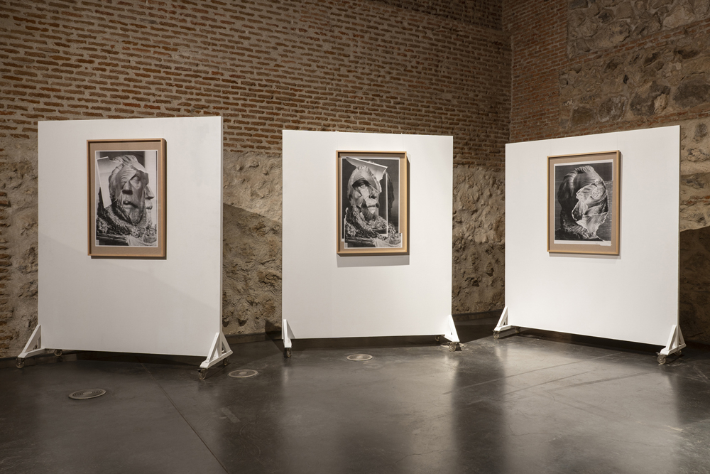
Rebobinar
Exhibited at Dilalica Barcelona. September 2019.
First solo show in Spain by Chilean artist Rocio Olivares.
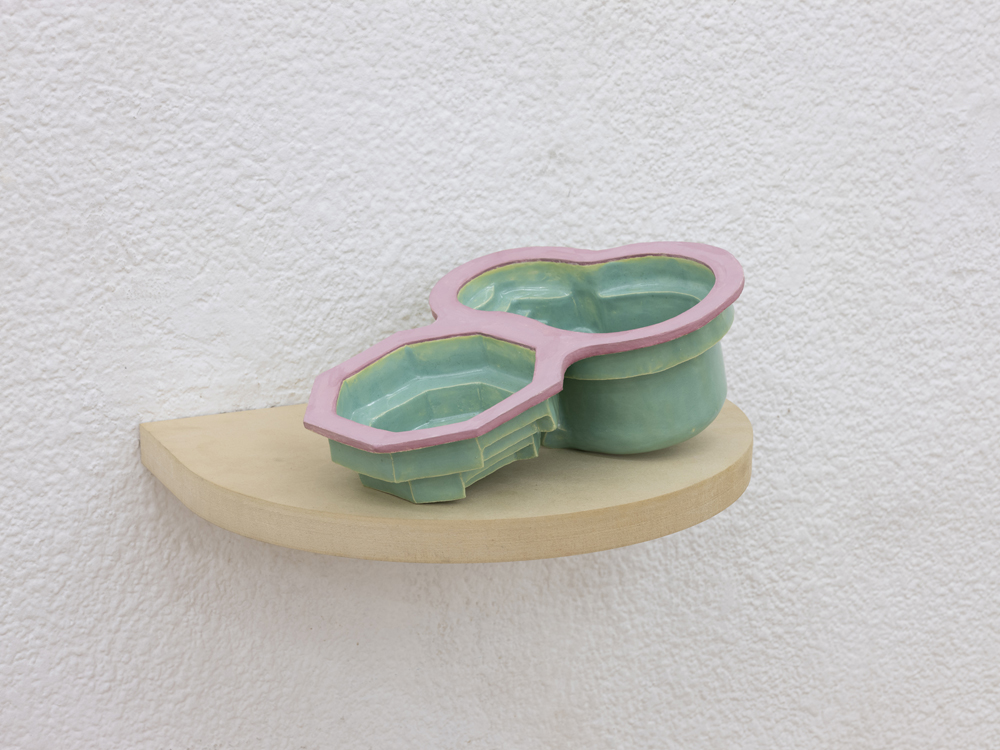
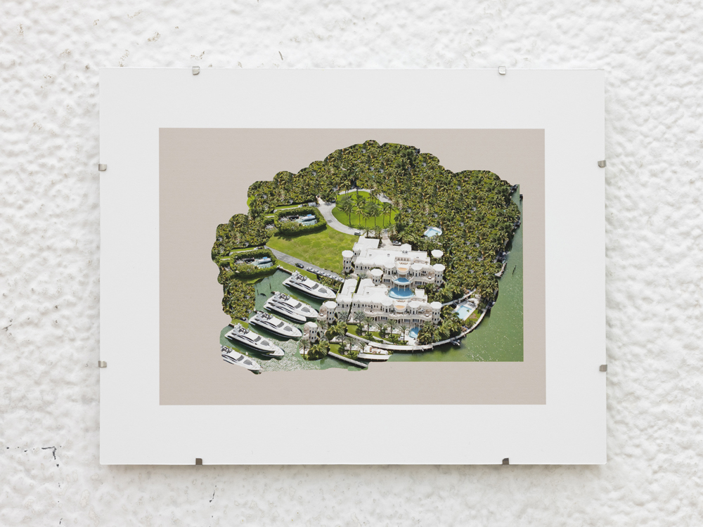
Espacio
Exhibited at Dilalica. May 2019.
Co-curated with Marta Sesé.
Artists: Elsa de Alfonso, Luz Broto, Lara Fluxà, Aleix Plademunt, Pedro Torres, Claudia Pagès
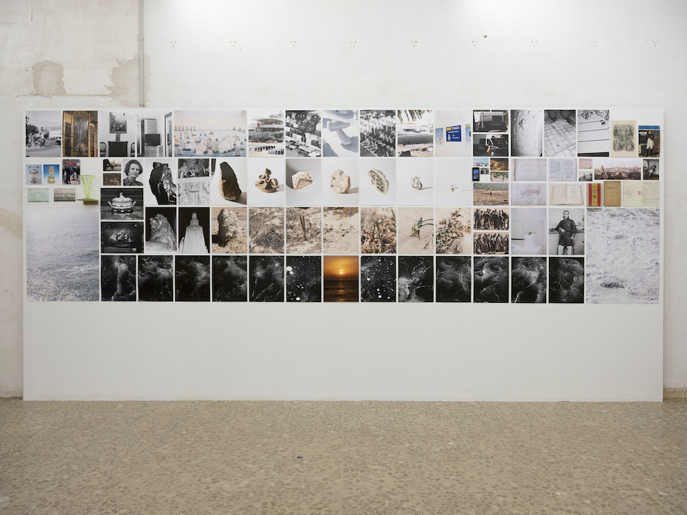
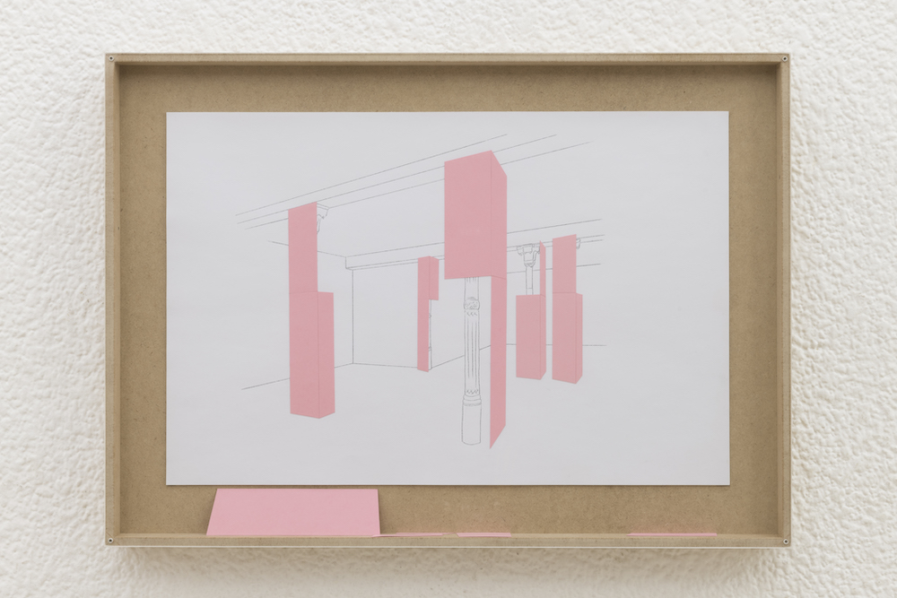
Archivo Rastro
Exhibited at c arte c, Madrid, 2019. Also selected as part of Red Itiner Program in 2020.
Co-curated with Marta Sesé and Louis-Charles Tiar
Artists: Felix R. Cid, Rafael Doctor Roncero, Cristina Mejías, Cristina de Middel, Ferran Pla, Miguel Ángel Tornero, Antonio Xoubanova, Nicholas F. Callaway, Colectivo PIPOL. Images by Galerna.
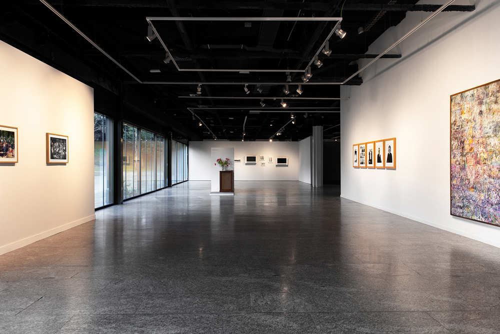
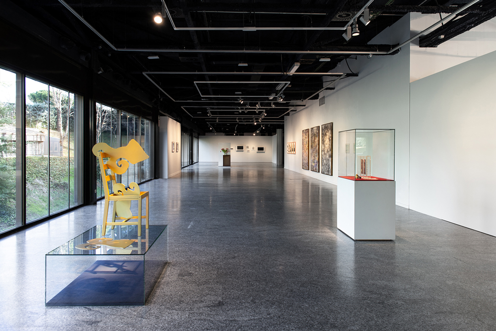